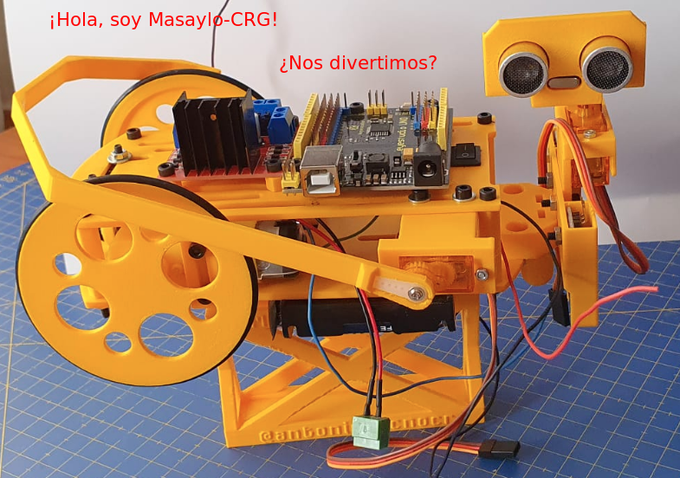
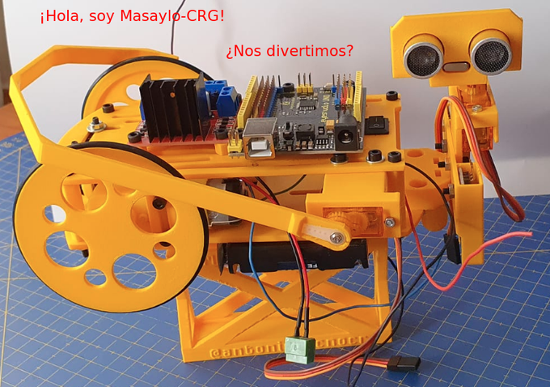
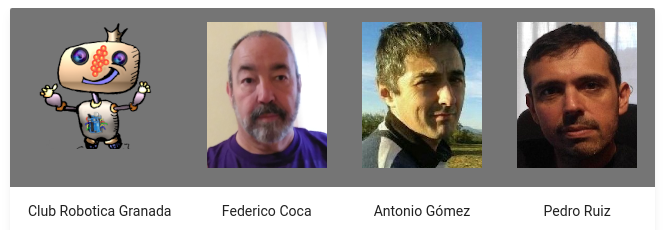
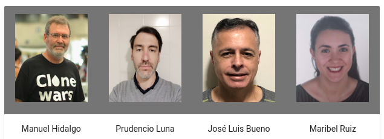

¿Que és MASAYLO????
Es un robot de suelo pensado para que el alumnado de los últimos cursos de primaria y los de Secundaria (ESO y Bachillerato) trabajen los temas STEAM.

Es un robot de suelo pensado para que el alumnado de los últimos cursos de primaria y los de Secundaria (ESO y Bachillerato) trabajen los temas STEAM.

Versión original de Antonio Gómez (V 1.0), mejorada y adaptada por Club Robótica Granada y Antonio Gómez (V 2.0 Masaylo-CRG). Se han trabajado en la librería incluyendo varias mejoras y el control de encoders, rediseño 3D para fácil impresión, mejora y adaptación de entorno de programación gráfico, generación de nueva documentación.


Obra publicada con Licencia Creative Commons Reconocimiento Compartir igual 4.0